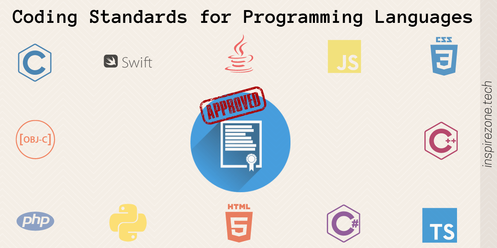

When using ESLint, I see how JavaScript helps enforcing coding standards and identifying potential issues in your code. While it’s a powerful and valuable tool, I do find it challenging to use, particularly when they are new to it or encounter certain complexities.
During my use of ESLint, its flexibility is one of its strengths, but I believe it can also be a source of complexity. Based on the practice WODS, users are required to set up a configuration file (usually .eslintrc.js or .eslintrc.json) to define coding standards and rules for their project. As a newcomer, configuring ESLint effectively can take time and effort.
During my experience using ESLint, I do notice, ESLint comes with a vast number of rules that cover various aspects of coding standards, style, and potential issues. Deciding which rules to enable or disable for a specific project was really challenging, as it requires an understanding of each rule’s purpose and implications.
As I prepare for the next WOD covering IntelliJ and ESLint, I really want to improve my skills as best as I can to fully get comfortable with this program. I believe using ChatGPT, or any AI-powered chatbot, will help my understanding the technology, practicing, and optimizing my interactions. I definitely use this to get quick answers to help fully understand. Getting better will help the quality and consistency of my codes. What I mainly need to work on is Understanding ESLint rules, which specify coding standards and potential issues. I can review the rules in your configuration and customize them to match your project’s coding style and requirements. Finally, the practice WODs will definitely get me more comfortable and familiar as well.
Despite these challenges, it’s important for me to note that the benefits of using ESLint, such as improved code quality, consistency, and early detection of coding issues, often outweigh the initial difficulties. For me to fully understand ESLint, documentation and online resources provide extensive guidance and examples. Also, the WODs will definitely give me more practice and confidents in my work. As a result, in the state I’m in, it does appear to be a pain to use. There are many steps I must remember and would have to get familiar with. As a newcomer to this, It may take some time and patience for me to start to get comfortable.